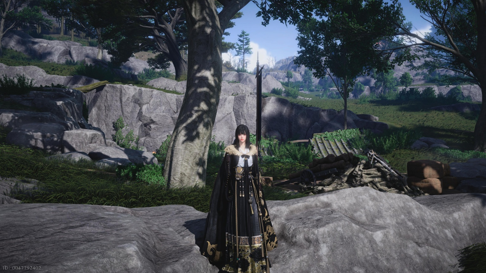
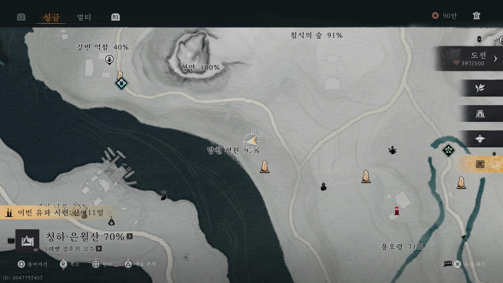
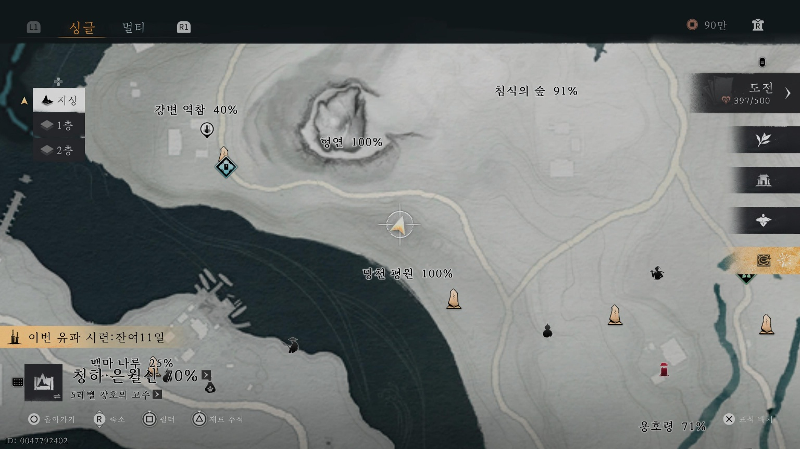
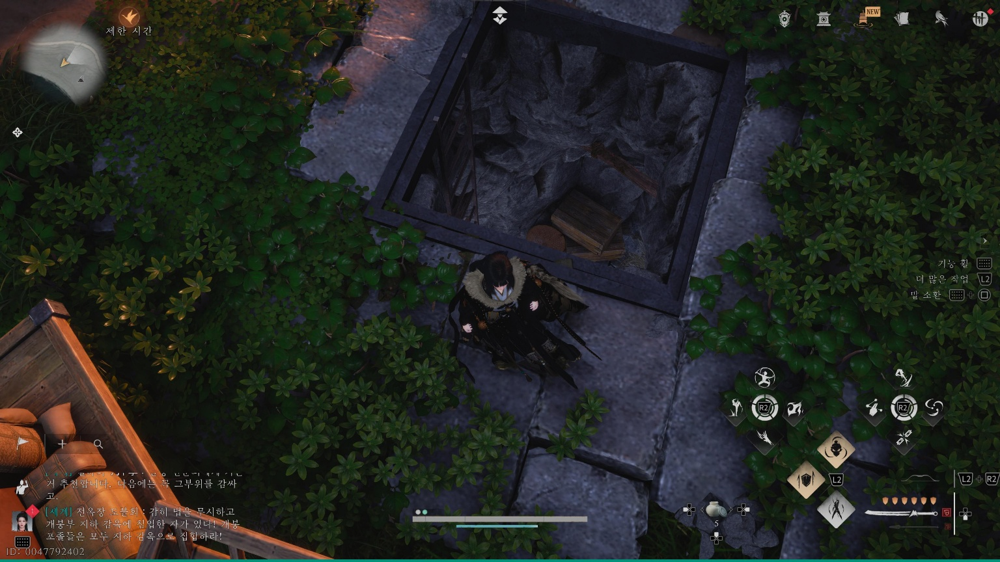

<div class="quest-detail-container" id="q187-container">
    <style>
        :root {
            --wuxia-accent-red: #b71c1c;
            --wuxia-accent-gold: #b08d55;
            --wuxia-text-main: #333;
            --wuxia-text-sub: #666;
            --finish-bg: #f9f9f9;
        }

        .wuxia-image-container {
            border: 1px solid #ddd;
            border-radius: 4px;
            overflow: hidden;
            box-shadow: 0 4px 12px rgba(0,0,0,0.08);
            background-color: #f4f4f2;
            margin: 8px 0 0 0;
            position: relative;
        }
        .wuxia-image-container img {
            width: 100%;
            height: auto;
            display: block;
        }

        /* [유지] 제목과 버튼을 한 줄에 정렬하는 핵심 로직 */
        .title-line {
            display: flex;
            justify-content: space-between;
            align-items: center;
            width: 100%;
            gap: 10px;
            margin-bottom: 5px;
        }

        /* [유지] 지도 정보 버튼 스타일 */
        .map-link-btn {
            flex-shrink: 0;
            background-color: #fdfaf5;
            border: 1px solid var(--wuxia-accent-gold);
            color: var(--wuxia-accent-gold);
            padding: 3px 8px;
            border-radius: 4px;
            text-decoration: none;
            font-size: 0.75em;
            font-weight: bold;
            white-space: nowrap;
            display: inline-block;
        }

        .step-header {
            color: var(--wuxia-text-main);
            font-size: 1.1em;
            border-left: 4px solid var(--wuxia-accent-gold);
            padding-left: 10px;
            font-weight: bold;
            margin: 20px 0 12px 0;
        }
        .section-group {
            display: flex;
            flex-direction: column;
            margin-bottom: 30px;
        }
        .check-wrapper {
            display: flex;
            align-items: flex-start;
            padding: 10px 12px;
            border: 1px solid #eee;
            border-radius: 6px;
            margin-bottom: 8px;
            background: #fff;
        }
        .item-checkbox {
            width: 18px;
            height: 18px;
            margin-right: 12px;
            margin-top: 3px;
            cursor: pointer;
            accent-color: var(--wuxia-accent-gold);
        }
        .item-content {
            flex: 1;
        }
        .box-title {
            font-weight: bold;
            font-size: 0.95em;
            color: var(--wuxia-text-main);
            word-break: keep-all;
        }
    </style>

    <div style="border-bottom: 2px solid var(--wuxia-accent-red); padding-bottom: 15px; margin-bottom: 20px;">
        <span style="background-color: var(--wuxia-accent-gold); color: #fff; padding: 2px 8px; border-radius: 2px; font-weight: bold; font-size: 0.8em; vertical-align: middle;">탐색</span>
        <h2 style="color: var(--wuxia-accent-gold); display: inline-block; margin: 0 0 0 10px; vertical-align: middle;">망천 평원 탐색 공략</h2>
        <p style="color: var(--wuxia-text-sub); font-size: 0.9em; margin-top: 5px;">망천 평원 지역 100% 달성 공략입니다.</p>

        <div style="display: flex; justify-content: space-between; align-items: center; margin-top: 10px; width: 100%;">
            <div style="display: inline-flex; align-items: center; background-color: #f8f5f0; padding: 4px 12px 4px 4px; border-radius: 20px; border: 1px solid #eee;">
                <div style="width: 22px; height: 22px; border-radius: 50%; overflow: hidden; margin-right: 8px;">
                    
                </div>
                <span style="font-size: 0.75em; color: #888;">Posted by <strong style="color: var(--wuxia-accent-gold);">윤쫑</strong></span>
            </div>
            <div class="like-container" onclick="handleLikeClick()" style="display: inline-flex; align-items: center; background-color: #fdfaf5; padding: 4px 12px; border-radius: 20px; border: 1px solid var(--wuxia-accent-gold); cursor: pointer;">
                <span style="font-size: 0.75em; color: var(--wuxia-accent-gold); font-weight: bold; display: flex; align-items: center; gap: 4px;">
                    <span>♥</span>
                    <span class="like-count">0</span>
                </span>
            </div>
        </div>
    </div>

    <div class="section-group">
        <div class="step-header">경계석 (1개)</div>
        <div class="check-wrapper" data-id="boundary-1">
            <input type="checkbox" class="item-checkbox">
            <div class="item-content">
                <div class="title-line">
                    <span class="box-title">망천 평원 경계석</span>
                    <a href="https://wwm.tips/map/?id=qinghe&marker=1765976841303" target="_blank" class="map-link-btn">지도 정보</a>
                </div>
            </div>
        </div>
    </div>

    <div class="section-group">
        <div class="step-header">영지 (2개)</div>
        <div class="check-wrapper" data-id="territory-1">
            <input type="checkbox" class="item-checkbox">
            <div class="item-content">
                <span class="box-title">1번째 영지</span><br>
                
                <div class="wuxia-image-container">
                    
                </div>
                <div class="wuxia-image-container">
                    
                </div>
            </div>
        </div>
        <div class="check-wrapper" data-id="territory-2">
            <input type="checkbox" class="item-checkbox">
            <div class="item-content">
                <span class="box-title">2번째 영지</span><br>
                <div class="wuxia-image-container">
                    
                </div>
            </div>
        </div>
    </div>

    <div class="section-group">
        <div class="step-header">상자 (3개)</div>
        <div class="check-wrapper" data-id="chest-group">
            <input type="checkbox" class="item-checkbox">
            <div class="item-content">
                <span class="box-title">영지 상자 (2개)</span><br>
                두 개의 상자는 영지 처리 후 획득 가능합니다.
            </div>
        </div>
        <div class="check-wrapper" data-id="chest-3">
            <input type="checkbox" class="item-checkbox">
            <div class="item-content">
                <span class="box-title">마지막 상자</span><br>
                마지막 상자는 아래 위치에 있습니다. 안쪽에 금강 사마귀도 있으니 참고하세요.
                <div class="wuxia-image-container">
                    
                </div>                
                <div class="wuxia-image-container">
                    
                </div>
            </div>
        </div>
    </div>

    <div class="section-group">
        <div class="step-header">묘물 (1개)</div>
        <div class="check-wrapper" data-id="object-1">
            <input type="checkbox" class="item-checkbox">
            <div class="item-content">
                  <div class="title-line">
                    <span class="box-title">금강 사마귀</span>
                    <a href="https://wwm.tips/map/?id=qinghe&marker=1765995889684" target="_blank" class="map-link-btn">지도 정보</a>
                </div>
                <div class="wuxia-image-container">
                    
                </div>                
            </div>
        </div>
    </div>

    <div style="text-align: center; margin-top: 40px; padding-bottom: 50px;">
        <button onclick="showQuestList()" style="background-color: #fff; border: 1px solid var(--wuxia-accent-gold); color: var(--wuxia-accent-gold); padding: 10px 30px; cursor: pointer; border-radius: 2px; font-weight: bold;">목록으로 돌아가기</button>
    </div>
</div>